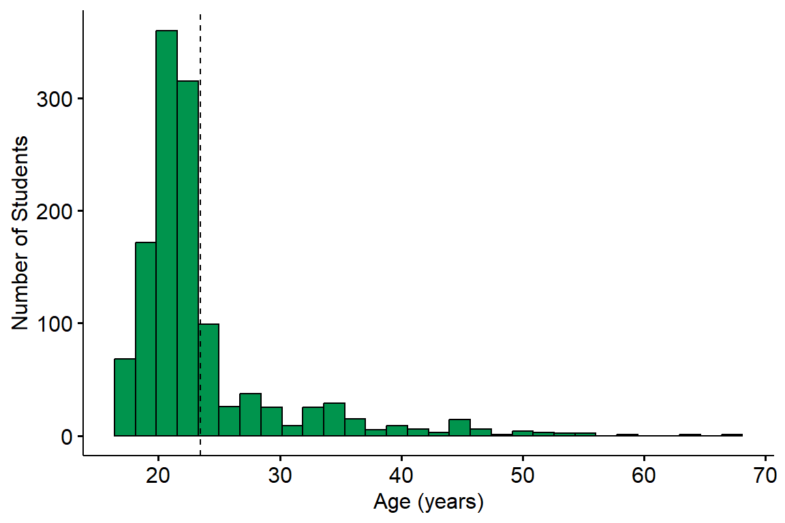
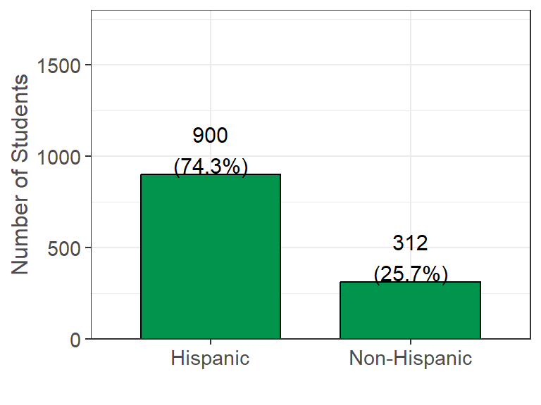
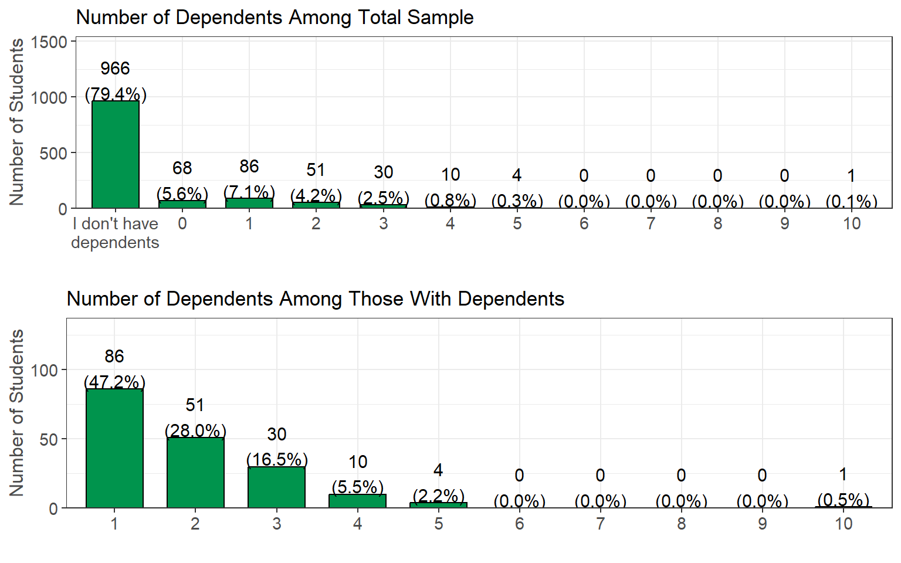
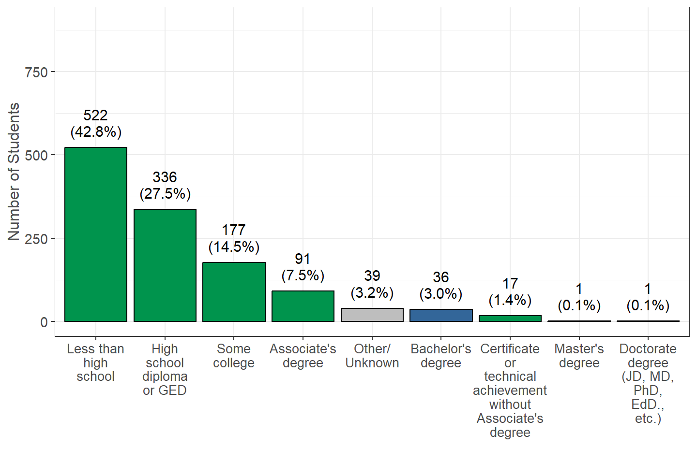
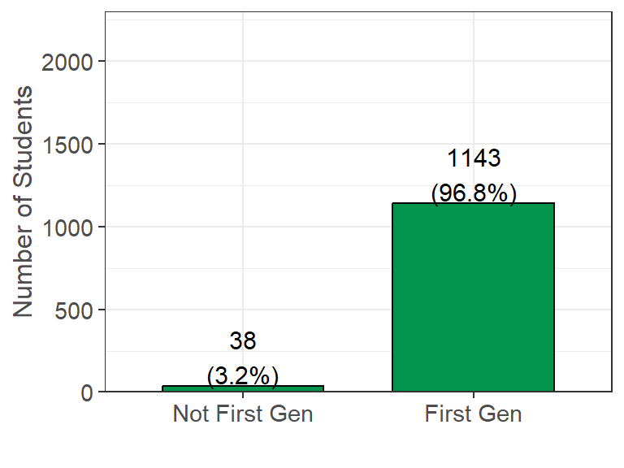

Demographics
Students were asked to report information relating to their personal demographics such as age, gender identity, race/ethnicity, number of dependents (if any), and their parents’ education level.
See Information on Missing Data
Age
Survey Question: What is your date of birth?
Additional Notes: Student age was determined by the difference between birth date and the time in which the survey was completed. Values were rounded down to the nearest whole number.
Summary: The average age of the students was 24.6 years with a range of 18 to 72, and a median age of 22. A total of 1387 (65.7%) students were 21 or older, and 374 (17.7%) students were 30 or older. Mean ages differed between campus types, where the mean age among CSU students was 23.5, compared to 27.4 among CCC students, and 21.2 among UC students.
Gender Identity

Survey question: What is your gender identity?
Summary: A total of 1642 (78.4%) students identified as a woman, 407 (19.4%) identified as a man, 27 (1.3%) identified as gender non-binary, and 15 (0.7%) identified as queer/non-conforming.
Ethnicity (i.e. Identifying with Hispanic Origin)

Survey Question: Do you identify as Hispanic or Latino or Spanish Origin?
Additional Notes: Possible answers were pulled from the U.S. Census questionnaire assessing Hispanic Origin: Mexican; Mexican American; Chicano; Puerto Rican; Cuban; another Hispanic/Latino/Spanish origin; or not of Hispanic/Latino/Spanish origin.
Summary: A total of 1436 (69.4%) students self-identified as having Hispanic Origins and 634 (30.6%) students self-identified as Non-Hispanic.
Race
| Identified Race | Yes (%) |
|---|---|
| White | 859 (40.7%) |
| Prefer not to answer race | 755 (35.8%) |
| Asian | 321 (15.2%) |
| Black or African American | 167 (7.9%) |
| American Indian and Alaska Native | 106 (5.0%) |
| Native Hawaiian and Other Pacific Islander | 40 (1.9%) |
Survey Question: What race do you identify as? (Select all that apply)
Additional Notes: Possible answers were pulled from the U.S. Census questionnaire assessing race: White, Black or African American, American Indian or Alaska Native, Chinese, Filipino, Asian Indian, Vietnamese, Korean, Japanese, Other Asian, Native Hawaiian, Samoan, Chamorro, and Other Pacific Islander. These 14 options were collapsed into the 5 broad U.S. Census groups due to small sample sizes in some groups.
Summary: A total of 859 (40.7%) students self-identified as White, 321 (15.2%) as Asian, 167 (7.9%) as Black or African American, 106 (5.0%) as American Indian or Alaskan Native, and 40 (1.9%) as Native Hawaiian or Other Pacific Islander. Additionally, 755 (35.8%) students preferred not to answer race, likely due to confusion between race and ethnicity.
Dependents

Survey Question: If you have dependents, then how many of them receive more than 50% of their financial support from you?
Additional Notes: These rates differed between campus types. Among CSU students, 182 (15.0%) reported they have dependents receiving more than 50% financial support, compared to 305 (44.8%) among CCC students, and 6 (3.3%) among UC students.
Summary: Among the total sample, 1478 (71.1%) students reported having no dependents, and 107 (5.1%) reported having dependents receiving less than 50% financial support. The remaining 493 (23.7%) students reported having dependents receiving more than 50% financial support. Of those with dependents receiving more than 50% financial support, 213 (43.2%) had one dependent, 151 (30.6%) had two, and 84 (17.0%) students had three dependents.
Parent Education

Survey Question: What is the highest level of education completed by your parents/guardians (for example, if your mother and father both raised you, and your mother has the highest level of education, then indicate her highest level of education)?
Additional Notes: This data is used to determine a student’s first-generation status. First-generation status is defined by neither parent having completed a bachelor’s degree or higher. The green bars represent first-generation categories, and the blue bars represent non-first-generation categories. Other/unknown responses are shown in gray.
Summary: A total of 1892 (93.8%) students reported first-generation status based on their parent/guardian education level. This outcome is not surprising because all students in this study were either enrolled in EOP or EOPS and both programs recruit students with first-generation status. A total of 719 (34.5%) students reported their parents/guardians did not complete high school, while 584 (28.0%) reported the highest level of education completed by their parents was high school.
First-Generation

Survey Question: This variable was derived from the question in the Parent Education section.
Additional Notes: Students who selected their parents’ education as “Less than high school,” “High school diploma or GED,” “Some college,” “Certificate or technical achievement without Associate’s degree,” or “Associate’s degree” were considered first-generation. The 66 (3.2%) students who selected “Other/Unknown” were set as missing values. All other responses were considered not first-generation.
Summary: A total of 1892 (93.8%) students reported first-generation status. As stated above, this outcome is not surprising because students in this study were either enrolled in EOP or EOPS, and both programs recruit students with first-generation status.